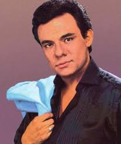
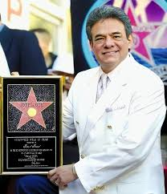

José Rómulo Sosa Ortiz nació el 17 de febrero en 1948 en Ciudad de México, en una familia de músicos, su padre era cantante de ópera y su madre pianista, lo que lo llevó a desarrollar sus habilidades como cantante y compositor desde muy pequeño. Lamentablemente en 2017 fue diagnosticado con cáncer de páncreas y después de una dificil batalla, José José fallece el 28 de Septiembre en 2019, a la edad de 71 años.
Desde la adolescencia mostró interés por la música, y a los 19 años formó un trío de bossa nova, Los Peg, donde tocaba el bajo y cantaba. Publicó su primer album en 1965 y en 1968 adoptó el nombre artístico “José José” en homenaje a su padre fallecido. Ganó bastante popularidad a inicios de los años 70s al participar en el Festival Latinoamericano de la Canción, donde su interpretación de “El Triste” (1970) lo dio a conocer internacionalmente. Durante la década de los 70s participó activamente en películas y fue acumulando varios éxitos musicales, como De pueblo en pueblo, Gavilán o paloma, Hasta que vuelvas, Reencuentro y en especial El príncipe, en el cual se le atribuyó el título de "El Príncipe de la Canción".

En los años 80s este consolida una fama mundial indiscutible, ya que empezando esta década lanza álbumes exitosos como: Amor Amor, Romántico, Gracias, Mi vida, álbumes que logran enormes ventas. Para luego lanzar Secretos que fue nominado a los Grammys, luego con Reflexiones que alcanzó el No. 1 de los Billboard Latin, alcanzando estos dos últimos millones de ventas por todo el mundo, además que siguió participando en diversos filmes que aumentaban su popularidad. A finales de esta gran etapa de su vida, José José se sumió en la depresión, y abusó del alcohol y drogras, excesos que pronto le pagarían factura.
Pronto en la década de los 90s fue cuando el deterioro en su voz y su salud comenzó a darle problemas, todo esto a causa del consumo desmedido del alcohol y drogas, su estilo de vida lleno de excesos y su vida de artista demandaba demasiado y sin embargo este siguió lanzando álbumes exitosos como 40 y 20, En las buenas... y en las malas. Y cuando llegó a un punto muy bajo, José José entró en rehabilitación debido a sus circunstancias tan deplorables.
Su vida continuó y durante las proximas décadas dejó de ser tan activo musicalmente pero su popularidad siguió incrementando, reconocido por su gran esfuerzo y talento a lo largo de su carrera musical, nominado a numerosos Grammys y recibió un premio Grammy a la Trayectoria, José José se destacó por su gran voz y aunque su salud lo obligó a retirarse fueron más de 50 años de trayectoria. Lamentablemente fallece en 2019 a causa de un tumor en el páncreas y otras complicaciones de salud.
Sin embargo nos dejó un enorme patrimonio que será recordado por todo el mundo, José José queria ser recordado como un amigo, en aquellas buenas y malas ocasiones, y asi fue. Que en paz descanse la leyenda José José, conocido como El príncipe de la canción.

José José no solo construyó una fama de talla mundial, nos dejó un enorme patrimonio, repleto de canciones que te abrazan con una calidez tal, que se siente como un amigo dandote consuelo, el príncipe logró algo como eso al transmitir una pasión palpable al interpretar las canciones. Además impulsó enormemente al reconocimiento de estos sectores musicales alrededor del mundo. Hoy en día, sus canciones se siguen oyendo, quedando marcado como uno de los intérpretes de las baladas románticas, puesto que significó mucho que este compartiera canciones tan reconfortantes del amor. Inspira a muchas personas e inspirará a muchisimos más, ya que demostró que apesar de las dificultades, uno puede levantarse.